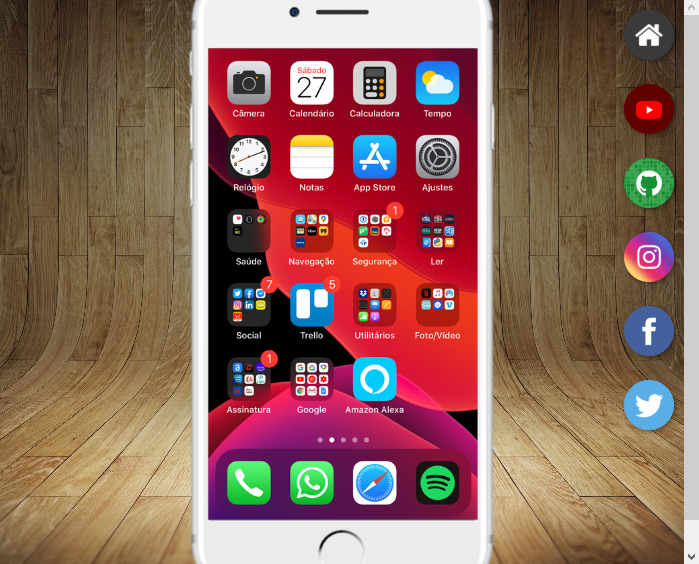
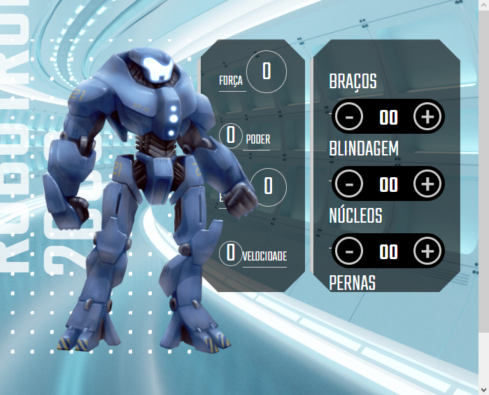
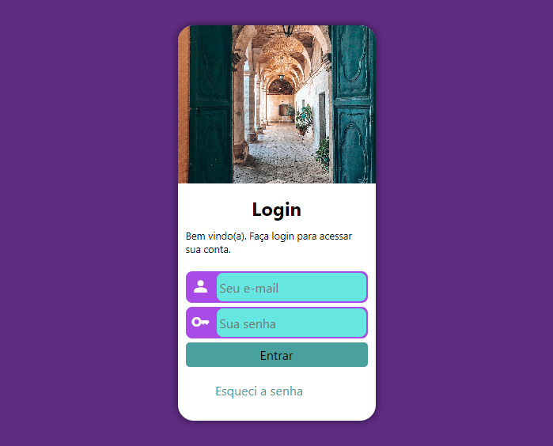
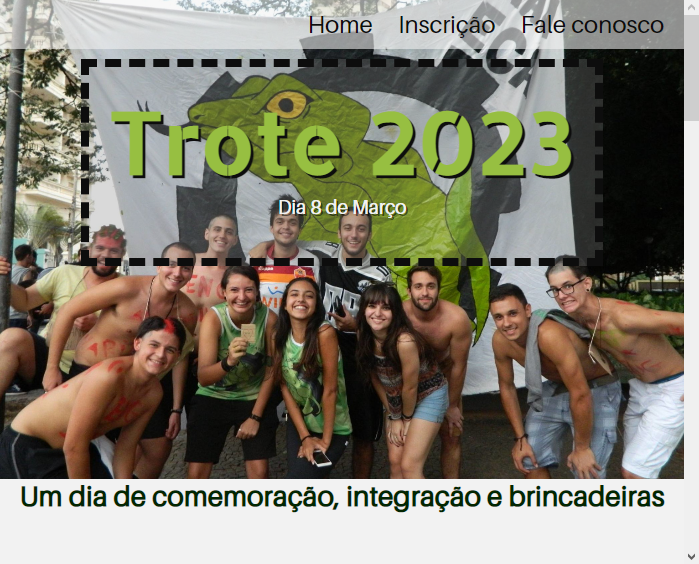

Apresento alguns dos projetos desenvolvidos por mim durante meu aprendizado

Um dos primeiro projetos acompanhando o curso de HTML5 e CSS3 do Curso em Vídeo

Projeto feito no curso de JavaScript para Web da Alura onde podemos controlar os atributos do robô

Último projeot do Módulo 4 de HTML5 e CSS3. Aqui utilizamos media queries

Meu primeiro projeto feito totalmente do zero. Projeto em andamento
Para se manter por dentro desses e outros projetos, acompanhe meu github.